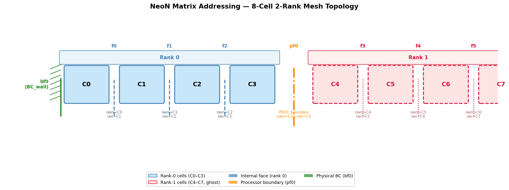
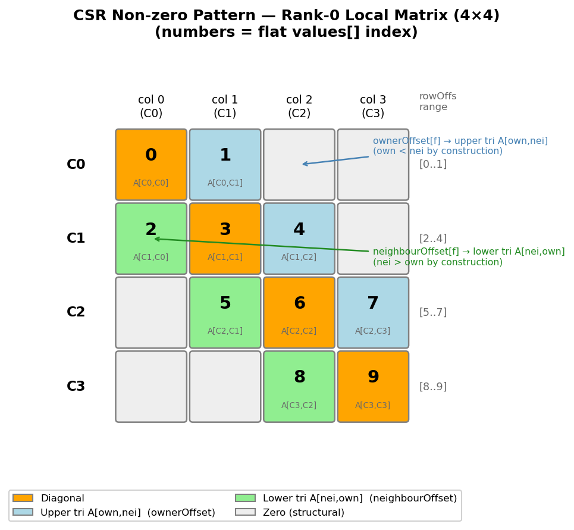
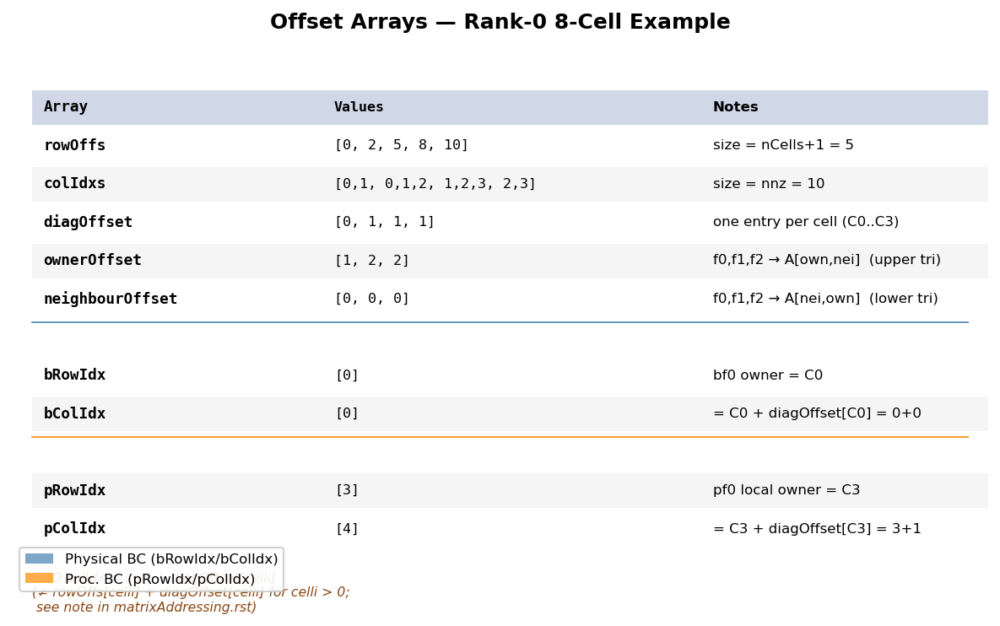

Matrix Addressing¶
Overview¶
Finite-volume discretisation produces a sparse linear system \(A \mathbf{x} = \mathbf{b}\) where each row corresponds to a mesh cell and each non-zero off-diagonal entry corresponds to a face shared by two cells. NeoN assembles this system in three parts:
Local CSR matrix — all cell-to-cell connections within the current MPI rank.
Physical-boundary COO matrix — contributions from Dirichlet/Neumann boundaries.
Processor-boundary COO matrix — contributions from faces shared with neighbouring MPI ranks.
The central object that links mesh topology to matrix storage is
FaceToMatrixAddress (include/NeoN/linearAlgebra/faceToMatrixAddress.hpp).
It stores three compact offset arrays (diagOffset, ownerOffset, neighbourOffset)
that map every mesh face to a position inside the flat values array of the CSR matrix.
Further details:
CSR Format¶
The local matrix is stored in Compressed Sparse Row (CSR) format via
SparsityPattern (include/NeoN/linearAlgebra/sparsityPattern.hpp):
Vector<IndexType> rowOffs_; // size nCells + 1
Vector<IndexType> colIdxs_; // size nnz (number of non-zeros)
// values stored separately in Matrix::values_
rowOffs[i+1] - rowOffs[i] gives the number of non-zeros in row i.
Iterating over row i:
for (localIdx k = rowOffs[i]; k < rowOffs[i+1]; ++k)
{
// colIdxs[k] is the column index
// values[k] is A[i, colIdxs[k]]
}
Row Layout: Lower | Diagonal | Upper¶
Within every row the non-zero entries are stored in the order:
Row i: [ A[i,j0] ... A[i,j_{k-1}] | A[i,i] | A[i,j_{k+1}] ... A[i,j_{m}] ]
|<----- lower (j < i) ----->|<-diag->|<----- upper (j > i) -------->|
diagOffset[i] equals the count of lower-triangular entries in row i, which is also
the number of internal faces for which cell i is the neighbour (i.e. has a larger
index than the owner).
Face Addressing Arrays¶
FaceToMatrixAddress stores three uint8_t arrays:
Array |
Size |
Meaning |
|---|---|---|
|
|
Offset of the diagonal entry within cell |
|
|
Offset within the owner cell’s row for the column pointing at the neighbour cell. Gives the upper-triangular entry \(A[\text{own},\text{nei}]\). |
|
|
Offset within the neighbour cell’s row for the column pointing at the owner cell. Gives the lower-triangular entry \(A[\text{nei},\text{own}]\). |
Why ownerOffset → upper triangular¶
By construction, NeoN guarantees owner[f] < neighbour[f] for every internal face f.
This means that in the owner’s row (row index = own), the column that points to the
neighbour has column index nei > own — which is the upper triangle.
Conversely, in the neighbour’s row (row index = nei), the column pointing back to the
owner has column index own < nei — which is the lower triangle.
This invariant is what makes ownerOffset the upper-triangular offset and
neighbourOffset the lower-triangular offset.
Helper functions (faceToMatrixAddress.hpp) convert offsets to flat values indices:
// Flat index of diagonal for cell i:
// diagIdx(celli) = rowOffs[celli] + diagOffset[celli]
localIdx diagIdx(localIdx celli) const;
// Flat index of A[own, nei] (upper triangular):
// upperIdx(own, f) = rowOffs[own] + ownerOffset[f]
// own < nei by construction → column index nei > row index own
localIdx upperIdx(localIdx own, localIdx faceIdx) const;
// Flat index of A[nei, own] (lower triangular):
// lowerIdx(nei, f) = rowOffs[nei] + neighbourOffset[f]
// nei > own by construction → column index own < row index nei
localIdx lowerIdx(localIdx nei, localIdx faceIdx) const;
8-Cell 2-Rank Example¶
Mesh Topology¶
Consider a 1-D mesh with 4 cells on rank 0 (C0–C3) and 4 cells on rank 1 (C4–C7):
{kind=link}

Generated by generate_matrix_addressing_figure.py.
Rank-0 cells (blue) and rank-1 cells (red, shown as ghost).
Internal faces f0–f2 are on rank 0; pf0 is the processor boundary; bf0 is a wall.¶
Face list for rank 0:
Internal faces (rank 0): f0 (own=C0, nei=C1), f1 (own=C1, nei=C2), f2 (own=C2, nei=C3)
Physical boundary face: bf0 — left wall of C0
Processor boundary face: pf0 — right side of C3, shared with rank 1 (own=C3, remote=C4)
The local matrix on rank 0 has shape 4×4 with 10 non-zeros (2 entries per interior face + 4 diagonals).
CSR Non-zero Pattern¶
{kind=link}

Generated by generate_matrix_addressing_figure.py.
Numbers show the flat values[] index. Orange = diagonal, blue = upper triangular
A[own,nei] (via ownerOffset), green = lower triangular A[nei,own] (via neighbourOffset).¶
Construction Walkthrough¶
setSparsityPatternFaceToMatrixAddressSerial (src/linearAlgebra/faceToMatrixAddress.cpp)
builds the arrays in five passes:
Step 1 — count non-zeros per cell (initialised to 1 for the diagonal):
nFacesPerCell = [1, 1, 1, 1]
f0: nFacesPerCell[C0]++, nFacesPerCell[C1]++ → [2, 2, 1, 1]
f1: nFacesPerCell[C1]++, nFacesPerCell[C2]++ → [2, 3, 2, 1]
f2: nFacesPerCell[C2]++, nFacesPerCell[C3]++ → [2, 3, 3, 2]
Step 2 — compute row offsets (exclusive prefix sum):
rowOffs = [0, 2, 5, 8, 10]
Step 3 — assign lower-triangular positions (nFacesPerCell reset to 0):
For each face, the neighbour cell receives a new position for the column=own entry.
Because nei > own, this column is in the lower triangle of the neighbour’s row:
f0: segIdx = nFacesPerCell[C1]++ = 0 → neighbourOffset[f0] = 0, colIdx[2+0] = C0
f1: segIdx = nFacesPerCell[C2]++ = 0 → neighbourOffset[f1] = 0, colIdx[5+0] = C1
f2: segIdx = nFacesPerCell[C3]++ = 0 → neighbourOffset[f2] = 0, colIdx[8+0] = C2
Step 4 — place diagonal:
C0: diagOffset[C0] = nFacesPerCell[C0] = 0, colIdx[0+0] = C0, nFacesPerCell[C0]++ = 1
C1: diagOffset[C1] = nFacesPerCell[C1] = 1, colIdx[2+1] = C1, nFacesPerCell[C1]++ = 2
C2: diagOffset[C2] = nFacesPerCell[C2] = 1, colIdx[5+1] = C2, nFacesPerCell[C2]++ = 2
C3: diagOffset[C3] = nFacesPerCell[C3] = 1, colIdx[8+1] = C3, nFacesPerCell[C3]++ = 2
Step 5 — assign upper-triangular positions (positions start after the diagonal):
For each face, the owner cell receives a new position for the column=nei entry.
Because own < nei, this column is in the upper triangle of the owner’s row:
f0: segIdx = nFacesPerCell[C0]++ = 1 → ownerOffset[f0] = 1, colIdx[0+1] = C1
f1: segIdx = nFacesPerCell[C1]++ = 2 → ownerOffset[f1] = 2, colIdx[2+2] = C2
f2: segIdx = nFacesPerCell[C2]++ = 2 → ownerOffset[f2] = 2, colIdx[5+2] = C3
Resulting Arrays¶
{kind=link}

Generated by generate_matrix_addressing_figure.py.¶
Array |
Values |
Notes |
|---|---|---|
|
|
size = nCells+1 = 5 |
|
|
size = nnz = 10 |
|
|
one entry per cell (C0..C3) |
|
|
f0,f1,f2 → upper tri A[own,nei] |
|
|
f0,f1,f2 → lower tri A[nei,own] |
Values Array Layout¶
Flat index |
Row (cell) |
Column (cell) |
Matrix entry |
|---|---|---|---|
0 |
C0 |
C0 |
A[C0,C0] — diagonal |
1 |
C0 |
C1 |
A[C0,C1] — upper triangular (f0, via |
2 |
C1 |
C0 |
A[C1,C0] — lower triangular (f0, via |
3 |
C1 |
C1 |
A[C1,C1] — diagonal |
4 |
C1 |
C2 |
A[C1,C2] — upper triangular (f1, via |
5 |
C2 |
C1 |
A[C2,C1] — lower triangular (f1, via |
6 |
C2 |
C2 |
A[C2,C2] — diagonal |
7 |
C2 |
C3 |
A[C2,C3] — upper triangular (f2, via |
8 |
C3 |
C2 |
A[C3,C2] — lower triangular (f2, via |
9 |
C3 |
C3 |
A[C3,C3] — diagonal |
Verification with Helper Functions¶
Using the helper functions:
// Diagonal access
diagIdx(C0) = rowOffs[0] + diagOffset[0] = 0 + 0 = 0 → values[0] = A[C0,C0] ✓
diagIdx(C1) = rowOffs[1] + diagOffset[1] = 2 + 1 = 3 → values[3] = A[C1,C1] ✓
diagIdx(C2) = rowOffs[2] + diagOffset[2] = 5 + 1 = 6 → values[6] = A[C2,C2] ✓
diagIdx(C3) = rowOffs[3] + diagOffset[3] = 8 + 1 = 9 → values[9] = A[C3,C3] ✓
// Upper triangular A[own, nei] — via upperIdx(own, face)
upperIdx(C0, f0) = rowOffs[0] + ownerOffset[f0] = 0 + 1 = 1 → values[1] = A[C0,C1] ✓
upperIdx(C1, f1) = rowOffs[1] + ownerOffset[f1] = 2 + 2 = 4 → values[4] = A[C1,C2] ✓
upperIdx(C2, f2) = rowOffs[2] + ownerOffset[f2] = 5 + 2 = 7 → values[7] = A[C2,C3] ✓
// Lower triangular A[nei, own] — via lowerIdx(nei, face)
lowerIdx(C1, f0) = rowOffs[1] + neighbourOffset[f0] = 2 + 0 = 2 → values[2] = A[C1,C0] ✓
lowerIdx(C2, f1) = rowOffs[2] + neighbourOffset[f1] = 5 + 0 = 5 → values[5] = A[C2,C1] ✓
lowerIdx(C3, f2) = rowOffs[3] + neighbourOffset[f2] = 8 + 0 = 8 → values[8] = A[C3,C2] ✓
LDU to CSR Correspondence¶
OpenFOAM’s classical LDU format stores three separate arrays: diag, lower, and upper.
NeoN encodes the same information in a single values array. The mapping for the 4-cell
rank-0 example is:
LDU concept |
NeoN access |
Flat index |
|---|---|---|
|
|
0 |
|
|
1 |
|
|
2 |
|
|
3 |
|
|
4 |
|
|
5 |
|
|
6 |
|
|
7 |
|
|
8 |
|
|
9 |
A typical operator assembly kernel (e.g. gaussGreenDiv.cpp) follows the pattern:
auto own = faceOwner[facei];
auto nei = faceNeighbour[facei];
// A[nei, own] — lower triangular, in neighbour's row:
values[rowOffs[nei] + neighbourOffset[facei]] += fluxNei;
// values[lowerIdx(nei, facei)] += fluxNei; // equivalent via matrixIterator
// A[own, nei] — upper triangular, in owner's row:
values[rowOffs[own] + ownerOffset[facei]] -= fluxOwn;
// values[upperIdx(own, facei)] -= fluxOwn; // equivalent via matrixIterator
// Update diagonals:
Kokkos::atomic_sub(&values[rowOffs[own] + diagOffset[own]], fluxNei);
Kokkos::atomic_sub(&values[rowOffs[nei] + diagOffset[nei]], fluxOwn); // sign depends on operator
Physical Boundary Contributions (COO)¶
A physical boundary face (wall, inlet, outlet, …) touches only one cell — the owner. Its contribution modifies the diagonal of that cell’s row and the right-hand side. No off-diagonal coupling is introduced, so a full CSR row is unnecessary.
NeoN stores physical boundary contributions in a CooSparsityPattern
(include/NeoN/linearAlgebra/sparsityPattern.hpp):
rowOffs[bfacei]= owner cell indexcolIdx[bfacei]=celli + diagOffset[celli](see note below)
Built in setBoundarySparsityPattern (faceToMatrixAddress.cpp):
// For boundary face bfacei touching owner cell celli:
bColIdx[bfacei] = celli + diagOffset[celli];
bRowIdx[bfacei] = celli;
For the 8-cell example (bf0 → C0):
bRowIdx = [0] (owner cell = C0 = 0)
bColIdx = [0] (= C0 + diagOffset[C0] = 0 + 0 = 0)
Note
The colIdx formula uses celli + diagOffset[celli], not the full flat CSR index
rowOffs[celli] + diagOffset[celli]. The two are equal only for cell 0 (where
rowOffs[0] = 0). How this value is consumed by CommunicationPattern in
LinearSystem::communicate() (linearSystem.hpp) should be verified before
relying on colIdx as a direct index into matrix_.values().
Processor Boundary Contributions (COO)¶
A processor boundary face couples a cell on the local rank to a cell on a neighbouring rank. The remote cell’s value is not stored locally; it arrives via MPI. After the exchange, the received contribution is subtracted from the diagonal of the local owner cell.
The sparsity is again COO, built in setProcBoundarySparsityPattern
(faceToMatrixAddress.cpp):
// For proc-boundary face bfacei touching local cell celli:
pColIdx[bfacei] = celli + diagOffset[celli];
pRowIdx[bfacei] = celli;
For the 8-cell example (pf0 → C3):
pRowIdx = [3] (owner cell = C3 = 3)
pColIdx = [4] (= C3 + diagOffset[C3] = 3 + 1 = 4)
The MPI exchange happens in LinearSystem::communicate()
(linearSystem.hpp):
Copy processor-boundary values to send buffer.
MPI_Alltoallvexchanges contributions with all neighbouring ranks.Subtract received values from the local CSR matrix diagonal via
sub(recvBuffer, boundaryMatrixMap, matrix_.values()).
Warning
As with physical boundaries, pColIdx = celli + diagOffset[celli] differs from the true
flat CSR diagonal index (rowOffs[celli] + diagOffset[celli]) for cells beyond cell 0.
Verify the scatter logic in LinearSystem::communicate() and
CommunicationPattern::boundaryMapVector before adding new processor-boundary operators.
How to Access Values in Practice¶
auto mi = ls.faceToMatrixAddress(); // FaceToMatrixAddress
auto values = ls.matrix().values().view(); // flat values array
// 1. Diagonal of cell i:
values[mi->diagIdx(i)] += contribution;
// 2. A[own, nei] (upper triangular) for internal face f:
values[mi->upperIdx(own, f)] += contribution;
// Equivalent direct form: values[rowOffs[own] + ownerOffset[f]] += contribution;
// 3. A[nei, own] (lower triangular) for internal face f:
values[mi->lowerIdx(nei, f)] += contribution;
// Equivalent direct form: values[rowOffs[nei] + neighbourOffset[f]] += contribution;
// 4. Physical or processor boundary contribution:
// Write directly to boundaryMatrix; NeoN scatters it to the CSR
// diagonal automatically during LinearSystem::communicate().
ls.boundaryMatrix().values().view()[bcFaceIdx] += bcContribution;